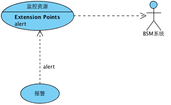

netfocus Documentation
1. requirement model : 模型
Use Case Diagram - 3.监控资源
跳至︰
Please select a model element
BSM系统 : Actor
监控资源 : Use Case
报警 : Use Case

Model Elements
名称
文档
BSM系统 : 参与者
监控资源 : 用例
报警 : 用例
netfocus Documentation